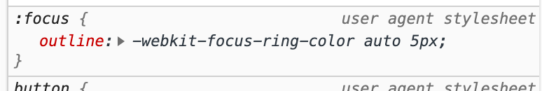

It started with a button
@moritzjacobs
»[…] to make doorbells ring, call servants and elevators, turn lights on and off, explode dynamite at a safe distance, and alert police to domestic burglaries.«
Rachel Plotnick, Power Button
Rachel Plotnick
Power Button, A History of Pleasure, Panic, and the Politics of
Pushing
ISBN: 9780262038232
Virtual, digital buttons


Buttons in browsers
<form action="sendmail.php">
<textarea
name="message"
id="message"
cols="30"
rows="10"
></textarea>
<input type="submit" />
</form>
<a href="..." class="btn btn-primary">Click me!</a>
Some terminology
»[…] since the iPhone screen had no buttons and no real tactile quality, it would be helpful to suggest to the user what was a button and what wasn’t.«
— Steve Jobs, according to Edward Muldrew
affordance
/ə-ˈfȯr-dᵊn(t)s/
the quality or property of an object that defines its possible uses
or makes clear how it can or should be used
Merriam Webster
»For instance, a button can look as if it needs to be turned or pushed. The characteristics of the button which make it look “turnable” or “pushable” together form its affordances.«
2007—2011

2013

Flat design
On average participants spent 22% more time (i.e., slower task performance) looking at the pages with weak signifiers.
flat UIs might have been a mistake lol 🤷♀️
Material design 🥰

13 PROTIPS ™️ to improve your button game
Life is about position and appearance
👀
»Listing OK first supports the natural reading order in English and other languages that read left-to-right. […]
Listing OK last improves the flow, because the dialog box "ends" with its conclusion.«

Button hierarchy,
button states

Michael Szczepanski, dribbble.com, 2017

Daimler AG, 2020
Words are everything
#team26
»if a necessary feature has a high astonishment factor, it may be necessary to redesign this feature.«
Publish article?
Publish article?
Write a review
Write a review
Write a review
a11y / u7y
accessibility / usability
Touch target size
»Provide ample touch targets for interactive elements. Try to maintain a minimum tappable area of 44pt x 44pt for all controls.«
»It is obvious on the face of it people don’t change their touch accuracy based on screen resolution.«
:hover
Firefox 72, Mac
Chrome 79, Mac
iOS Safari 13
:focus
Chrome 79, Mac

*:focus {
outline: 0;
}
const Button = ({ label, message }) => (
<div onClick={() => alert(message)}>{label}</div>
);
export default () => (
<div className="App">
<Button label="click me!" message="You clicked me!" />
</div>
);
const Button = ({ label, message }) => (
<div onClick={() => alert(message)}>{label}</div>
);
export default () => (
<div className="App">
<Button label="click me!" message="You clicked me!" />
</div>
);
const Button = ({ label, message }) => (
<div tabindex="0" onClick={() => alert(message)}>{label}</div>
);
export default () => (
<div className="App">
<Button label="click me!" message="You clicked me!" />
</div>
);
const Button = ({ label, message }) => (
<button type="button" onClick={() => alert(message)}>
{label}
</button>
);
export default () => (
<div className="App">
<Button label="click me!" message="You clicked me!" />
</div>
);
in Chrome: onClick => :focus
:focus-visible
Color blindness


Implementation details
<a href="#" onClick={() => alert("ok boomer")}>…</a>
<button onClick={() => {
window.location.href = "https://example.com"
}}>…</button>
Sometimes links are buttons, sometimes buttons are links
»Making a link look like a button is materially dishonest. It tells users that links and buttons are the same when they’re not.
[…] submit buttons shouldn’t have a hand cursor. In doing so, the hand (pointer) helps those using a pointing device spot a link.«
aria-label
<!-- Github export feature -->
<button type="button">
<!-- Icon provided by fontawesome icon font -->
<i class="fab fa-github-square"></i>
</button>
<!-- Github export feature -->
<button type="button" aria-label="export to github">
<!-- Icon provided by fontawesome icon font -->
<i class="fab fa-github-square"></i>
</button>
Thank you.
@moritzjacobs
@peerigon
↳ github
↳ twitter
↳ instagram
www.peerigon.com